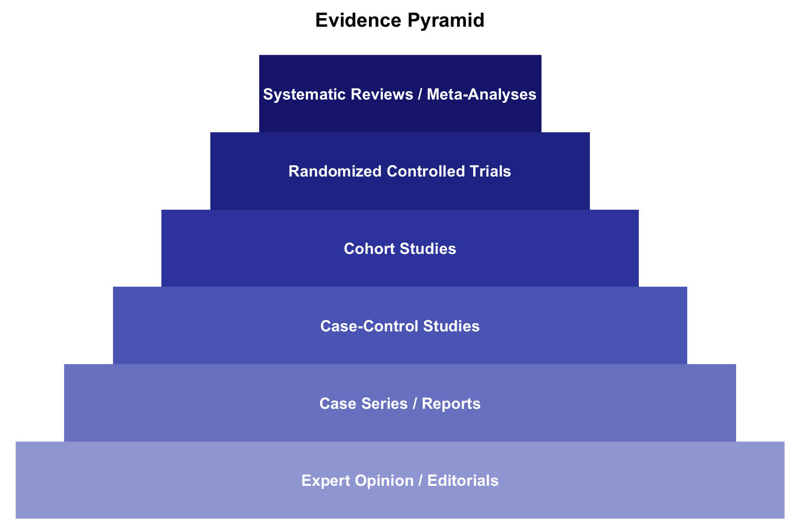
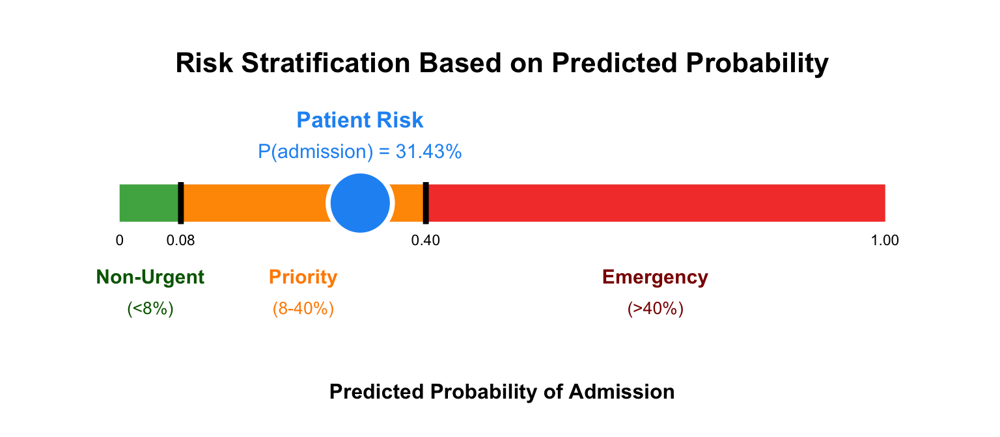
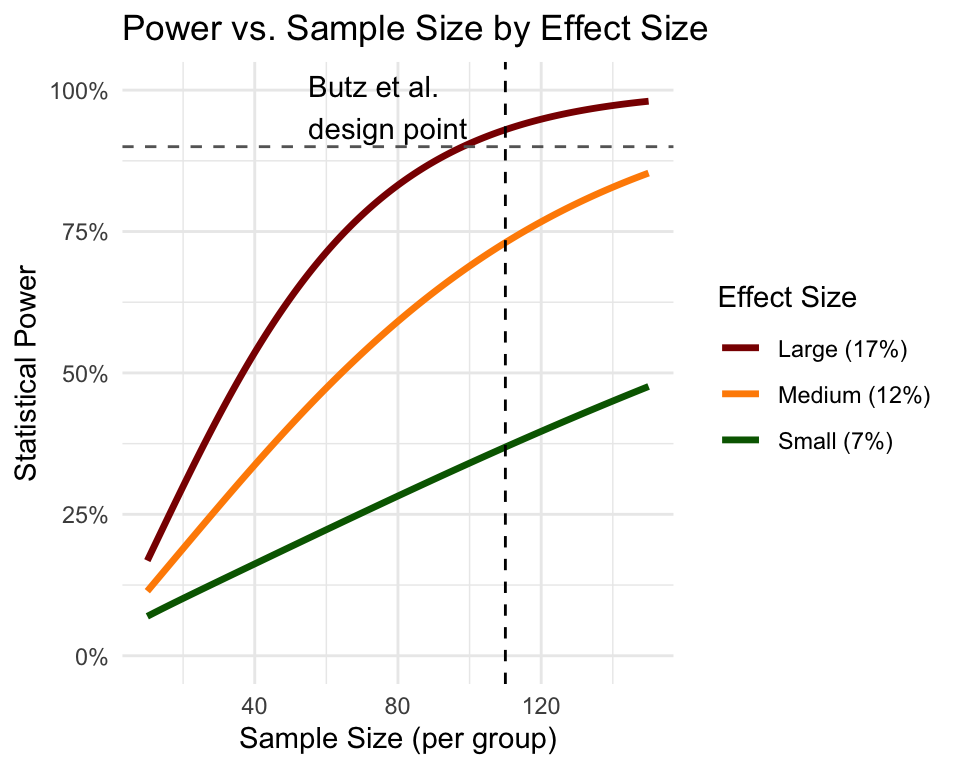
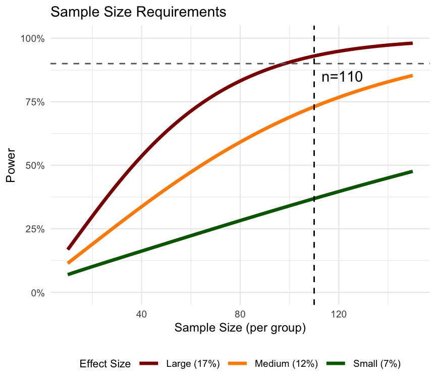
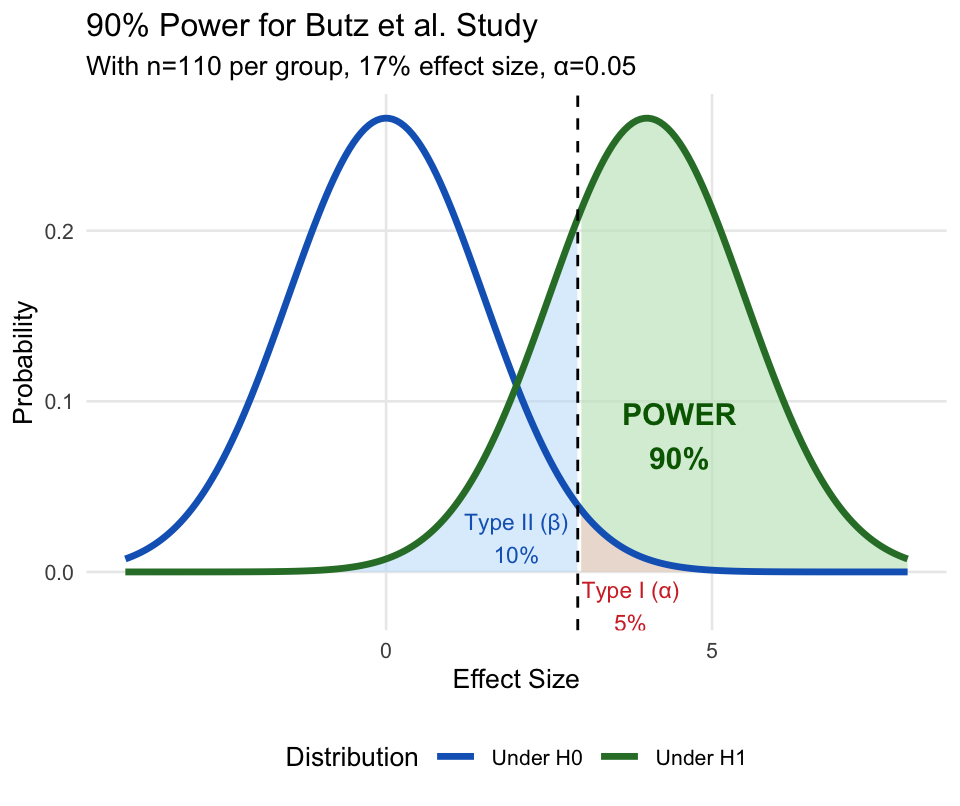
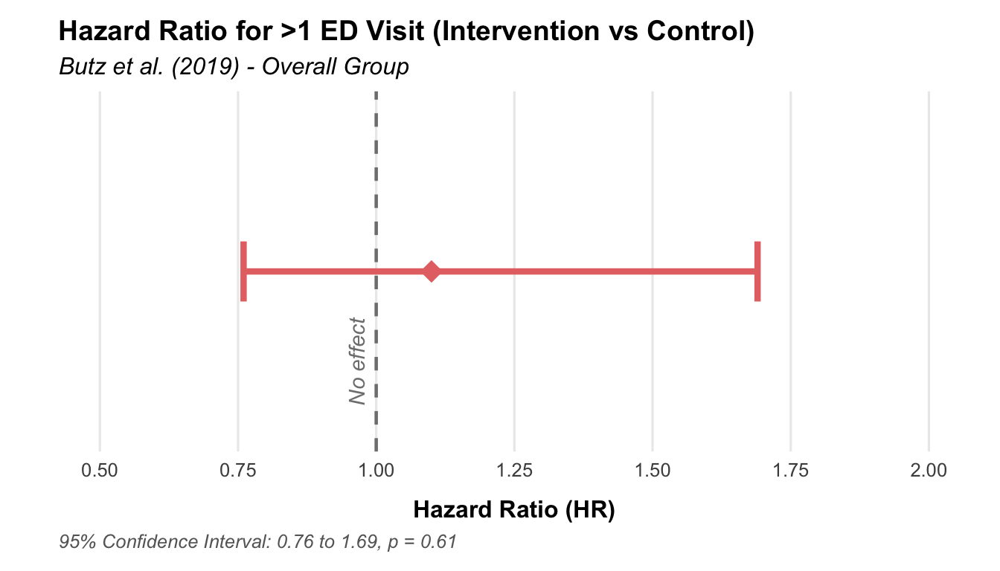
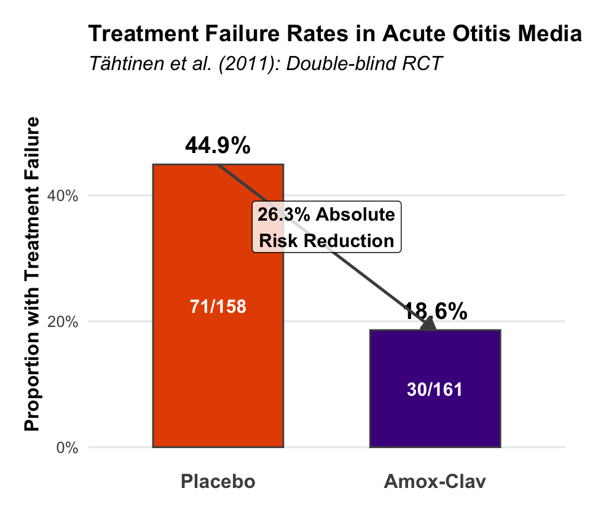
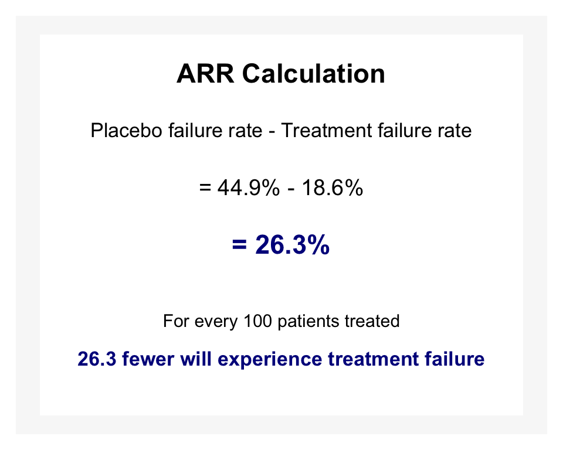
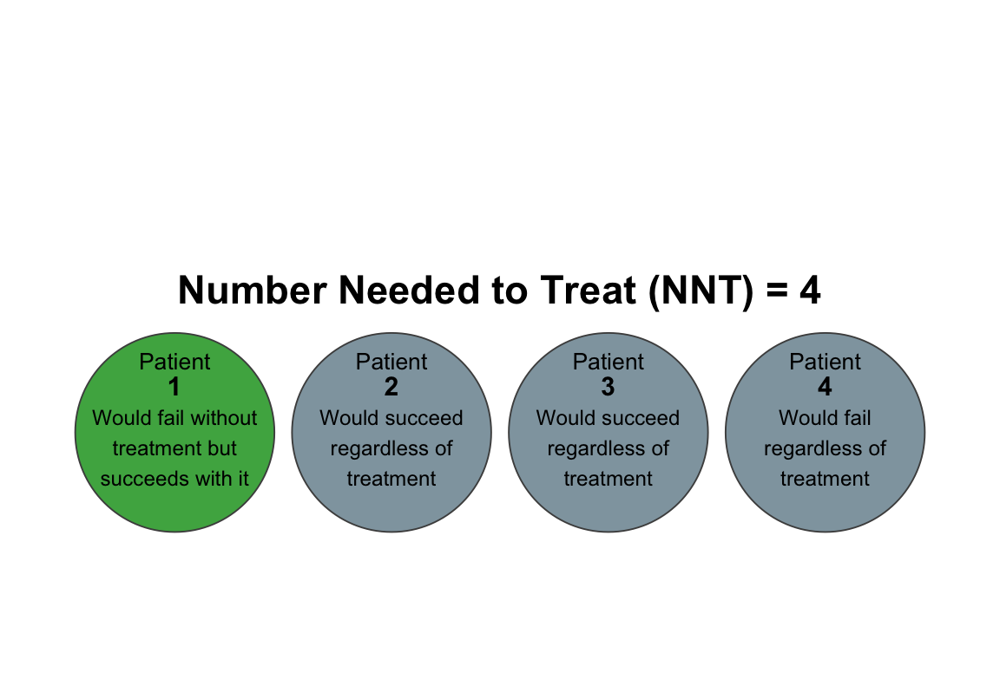

EBM 2024: Lecture 3
Interpreting Clinical Studies: Models, Trials, and When Things Don’t Go as Planned
Austin Meyer, MD, PhD, MS, MPH, MS
2025-05-16
Roadmap - Exactly 50 Minutes…
Fundamentals & Refreshers
- Brief Review: Pre-test to Post-test (2 min)
- Study Types & Evidence Pyramid (3 min)
- Key Concepts: Trials & Modeling (5 min)
- \(H_0\), P-values, CIs
- Basic Regression
- Bias & Confounding
Case Studies: Diving into Evidence
- Diagnostic Modeling: Pediatric Triage (12 min)
- “Negative” Trial: Power & Interventions (12 min)
- “Positive” Trial: Treating AOM (11 min)
- Q&A (5 min)
Introduction
Beyond Single Tests: Evaluating Broader Evidence
Last Lecture Recap:
- Diagnostic tests shift probability
- Helped make decisions for individual patients
This Lecture:
- How studies generate evidence
- Exploring different study types
- Focus on:
- Building clinical models
- Interpreting “negative” trials
- Understanding “positive” trials
Quick Refresher: The Probability Journey
- Pre-test Probability: Initial clinical suspicion
- Diagnostic Test: New information (Sensitivity, Specificity, LRs)
- Post-test Probability: Updated clinical suspicion
- Today: The studies behind these numbers
Study Types & Why They Matter
- Observational:
- Cohort, Case-Control, Cross-Sectional
- Experimental:
- Randomized Controlled Trials (RCTs) - Gold Standard for Therapy
- Syntheses:
- Systematic Reviews & Meta-Analyses
- Goal: Understand strength of evidence from different research designs
Core Concepts (1/3)
- Null Hypothesis (\(H_0\)): Assumption of NO difference or NO effect
- Research aims to reject or fail to reject \(H_0\)
- P-value: Probability of observing study results (or more extreme) IF \(H_0\) is true
- Not P(\(H_0\) is true) or P(Type I error)
- P(Data | \(H_0\)) — Informs Type I error risk
Core Concepts (2/3)
- Confidence Interval (CI): Range likely containing the true population parameter
- 95% CI: If study repeated many times, 95% of CIs would contain true value
- If 95% CI for a difference excludes 0 (or 1 for ratios), then p < 0.05
Core Concepts (3/3)
- Regression: Statistical method modeling relationships between predictors and outcomes
- Logistic Regression: For binary outcomes (yes/no); estimates odds of outcome
- Bias: Systematic error in study design or execution
- Confounding: Third variable distorts exposure-outcome relationship
- RCTs help minimize these issues through randomization
Case Study 1: Diagnostic Modeling - Pediatric Triage
Challenge: Spotting Sick Kids Fast
- Critical challenge in busy/low-resource settings
- How to systematically use available information?
- Study: Mawji A, Li E, Dunsmuir D, et al. (2022). Smart triage: Development of a rapid pediatric triage algorithm for use in low-and-middle income countries. Frontiers in Pediatrics, 10, 976870.
Building the Model: Logistic Regression
- Goal: Predict hospital admission (proxy for severe illness)
- Method: Analysis of data from acutely ill children in Jinja, Uganda
- The Model Equation: \[ \begin{align} \text{logit}(p) &= -32.888 \\ &+ (0.252 \times \sqrt{\text{age in months}}) \\ &+ (0.016 \times \text{heart rate}) \\ &+ (0.819 \times \text{temperature }^\circ C) \\ &+ (-0.022 \times \text{MUAC in mm}) \\ &+ (0.048 \times \text{transformed O}_2 \text{ saturation}) \\ &+ (1.793 \times \text{parent concern}) \\ &+ (1.012 \times \text{difficulty breathing}) \\ &+ (1.814 \times \text{oedema}) \\ &+ (1.506 \times \text{pallor}) \end{align} \]
Where p = probability of admission.
Transformed O\(_2\) Saturation: \(70.103 \times \log_{10}(101.687 - \text{SpO2}) - 55.833\).
Understanding Logistic Regression Output
- logit(p): Log-odds of admission: \(\ln\left(\frac{p}{1-p}\right)\)
- Coefficients: For each 1-unit increase in predictor, log-odds changes by coefficient value
- Example: For 1 bpm increase in heart rate, log-odds increases by 0.016
- Exponentiating gives Odds Ratio (OR)
- \(e^{0.016} \approx 1.016\) → ~1.6% increase in odds per 1 bpm HR increase
- Intercept (-32.888): Log-odds when all predictors are zero/reference
From Log-Odds to Probability
- Calculate
logit(p)using patient’s data - Convert to probability
p: \[p = \frac{e^{\text{logit}(p)}}{1 + e^{\text{logit}(p)}} = \frac{1}{1 + e^{-\text{logit}(p)}}\]
Example: Simulated Patient
- Age: 12 months (\(\sqrt{12} \approx 3.464\))
- HR: 140 bpm; Temp: 38.5 \(^\circ C\); MUAC: 130 mm
- O\(_2\) Sat: 92% (Transformed: \(70.103 \times \log_{10}(101.687 - 92) - 55.833 \approx 13.302\))
- Parent concern: Yes (1); Difficulty breathing: Yes (1)
- Oedema: No (0); Pallor: Yes (1)
- Calculated Result:
- Logit(p) = -0.925
- Probability of admission = 0.284 (28.4%)
Model Performance & Risk Stratification
- AUC (Area Under ROC Curve): 0.86 (“good discrimination”)
- Risk Stratification (Mawji et al., 2022):
- Low-risk threshold: < 8% probability (Sensitivity 91%)
- High-risk threshold: > 40% probability (Specificity 92%)
- Categories: Non-urgent, Priority, Emergency
Our patient: p = 28.4% → Priority (between 8% and 40%)
Teaching Points: Mawji et al. Triage Model
- Addresses real-world clinical need
- Logistic regression effectively combines factors for binary outcome prediction
- Transparent model (published equation) enables application/testing
- Performance metrics (AUC, Sensitivity, Specificity) are crucial
- Risk stratification translates model output to actionable decisions
Case Study 2: “Negative” Trial - Power & Asthma
Question: Home Environmental Interventions for Asthma ED Visits?
- Poorly controlled asthma often leads to frequent ED visits
- Home triggers are known contributing factors
- Study: Butz AM, Bollinger ME, Ogborn J, et al. (2019). Children with poorly controlled asthma: Randomized controlled trial of a home-based environmental control intervention. Pediatric Pulmonology, 54(3), 245–256.
Study Design: An RCT (Butz et al., 2019)
Methodology
- Population: Children (3-12 yrs) with persistent asthma, ≥2 ED visits or >1 hospitalization in past year
- Randomized: Yes, 222 children
- Primary Outcome: Proportion with >1 ED repeat asthma visit in 12 months
Hypothesis & Power
- \(H_0\): Intervention does NOT reduce proportion with >1 ED visit
- \(H_A\): Intervention DOES reduce this proportion
- Power Calculation (a priori):
- Expected ~92% in control will have >1 ED visit
- Aimed to detect reduction to 75% (17% absolute reduction)
- For 90% power, α=0.05, needed 110 per group
- Enrollment achieved: INT n=107, CON n=115
From Theory to Practice: Sample Size Calculation
Sample Size Formula
\(n \text{ per group} = \frac{(Z_{\alpha/2} + Z_{\beta})^2 \times [p_1(1-p_1) + p_2(1-p_2)]}{(p_1 - p_2)^2}\)
Where:
- \(Z_{\alpha/2}\) = 1.96 for α = 0.05 (two-sided)
- \(Z_{\beta}\) = 1.28 for 90% power
- \(p_1\) = fraction >1 ED visit in cont group (0.92)
- \(p_2\) = fraction >1 ED visit in int group (0.75)
Effect Size Matters!
- Smaller effects require larger samples
- 17% reduction is clinically meaningful

Calculating Sample Size for the Study
Sample Size Formula for Two Proportions
\(n \text{ per group} = \frac{(Z_{\alpha/2} + Z_{\beta})^2 \times [p_1(1-p_1) + p_2(1-p_2)]}{(p_1 - p_2)^2}\)
Plugging in the Values
- \(Z_{\alpha/2}\) = 1.96 (α = 0.05)
- \(Z_{\beta}\) = 1.28 (Power = 90%)
- \(p_1\) = 0.92 (Control)
- \(p_2\) = 0.75 (Intervention)
\(n = \frac{(1.96 + 1.28)^2 \times [0.92(1-0.92) + 0.75(1-0.75)]}{(0.92 - 0.75)^2}\)
\(n = \frac{10.5 \times (0.0736 + 0.1875)}{0.0289} = 95\) patients per group
Adjustment for Attrition
- Added ~15% buffer for potential dropouts
- Final target: 110 per group

Short Detour: Understanding Hypothesis Testing
- Type I Error (α): Probability of falsely rejecting a true null hypothesis
- Type II Error (β): Probability of failing to reject a false null hypothesis
- Statistical Power (1-β): Probability of correctly rejecting a false null hypothesis
Type I Error (α)
- The area where we reject H0 when it is actually true
- This is our false positive risk
- In scientific research, we typically control this at 5% (α = 0.05)
- For a negative study result, this is not our primary concern
Type II Error (β) and Statistical Power
- Type II Error (β): Probability of failing to reject H0 when Ha is true
- Statistical Power (1-β): Probability of correctly rejecting false H0
- Underpowered studies risk missing true effects
- Affected by: sample size, effect size, variability, and significance level
Power Revisited
- Power: Probability of correctly rejecting false \(H_0\) (1 - β)
- Underpowered “negative” study can be uninformative
- A priori power calculation is good scientific practice
- Post-hoc power calculations generally unhelpful; focus on CI instead
Understanding 90% Power for the Study

What 90% Power Means
- If the intervention truly reduces ED visits from 92% to 75%, we have a 90% chance of detecting this effect
Error Risks with n=110 per group
- Type I error (α=0.05): 5% chance of falsely claiming the intervention works when it doesn’t
- Type II error (β=0.10): 10% chance of missing a true effect when it exists
Actual Study Groups (Butz et al., 2019)
Intervention Group (n=107)
- ED Follow-up Visit within 7 days:
- Asthma symptom evaluation
- Medication review & inhaler technique
- Review allergen & cotinine results with visual aids
- Two Home Nurse Visits:
- Targeted EC education based on allergen sensitization
- Active remediation (traps, baits, trash cans)
- Motivational interviewing for smoking cessation
- PCP follow-up scheduled within 4 weeks
Control Group (n=115)
No ED Follow-up
Three Home Nurse Visits over 3 months:
- Standard asthma education
- Medication use & inhaler technique evaluation
- Basic EC education without remediation
- Review of mailed allergen & cotinine results
Passive interventions:
- Referrals to smoking cessation programs
- Lab results mailed to caregivers/PCPs
PCP follow-up scheduled
Results: Primary Outcome (Butz et al., 2019)
“There was no difference in increased risk of >1 ED visit at 12 months between INT and CON groups.”
Cox Proportional Hazards for INT vs CON: - HR 1.10 (95% CI, 0.76–1.69) - P = 0.61
“No Significant Difference”: What Does It Mean?
Not necessarily “NO effect”
Means study failed to reject \(H_0\)
Possible Reasons:
- True lack of effect (or tiny effect)
- Type II Error (β): Intervention works, but study missed it
- Powered at 90% for 17% reduction (10% Type II error risk)
- If true effect smaller, study likely underpowered
Butz et al. Confidence Interval
HR 1.10 (95% CI, 0.76 to 1.69)
- CI includes 1.0 (no difference in hazard)
True effect could range from:
- 24% reduction in hazard for INT (HR 0.76)
- 69% increase in hazard for INT (HR 1.69)
Wide CI indicates substantial imprecision
CI helps determine if clinically meaningful effect is ruled out
Subgroup Finding (Butz et al., 2019)
- For children without secondhand smoke exposure, median time to first recurrent ED visit differed significantly:
- CON: 195 days
- INT: >365 days (adjusted analysis)
- Caution with Subgroup Analyses:
- May not be pre-specified
- Multiple comparisons increase Type I error risk
- Consider as hypothesis-generating rather than definitive
Teaching Points: Butz et al. Asthma Study
- RCTs provide strong evidence for testing interventions
- A Priori Power Analysis is essential for study planning
- Interpreting “Negative” Results:
- “Failed to reject \(H_0\),” not “proved \(H_0\) true”
- Consider Type II error possibility
- Examine CI: Does it exclude clinically important effects?
- P-values aren’t everything; CIs provide more information
- Subgroup analyses should be interpreted cautiously
Case Study 3: “Positive” Trial - Treating AOM
Question: Antibiotics for Acute Otitis Media (AOM) in Young Kids?
- AOM is common, antibiotic use widespread but controversial
- Study: Tähtinen PA, et al. (2011). A placebo-controlled trial of antimicrobial treatment for acute otitis media. N Engl J Med, 364(2), 116-26.
Study Design: Another RCT
- Population: Children 6-35 months with AOM by strict diagnostic criteria
- Intervention: Amoxicillin-clavulanate (n=161)
- Control: Placebo (n=158)
- Primary Outcome: Treatment failure by day 8 (composite endpoint)
- Design Strengths: Randomized, Double-Blind, Placebo-Controlled
Results: Clear Difference
- Treatment Failure Rate by Day 8:
- Amoxicillin-clavulanate: 18.6% (30/161)
- Placebo: 44.9% (71/158)
- P-value < 0.001
- Key Statistics:
- Absolute Risk Reduction: 26.3%
- Number Needed to Treat: 4
- Relative Risk Reduction: 58.6%

Calculating Absolute Risk Reduction (ARR)
Step 1: Gather Raw Data
Placebo group:
- 71 failures out of 158 patients
Failure rate = 71 ÷ 158 = 0.449 (44.9%)
Amoxicillin-clavulanate group:
- 30 failures out of 161 patients
Failure rate = 30 ÷ 161 = 0.186 (18.6%)
Step 2: Calculate ARR
- ARR = Risk₁ - Risk₂
- ARR = 0.449 - 0.186 = 0.263 (26.3%)

Absolute Risk Reduction to Number Needed to Treat
Step 3: Calculate NNT
- NNT = 1 ÷ ARR
- NNT = 1 ÷ 0.263 = 3.8 ≈ 4
Clinical Interpretation
- NNT = 4 means:
- You need to treat 4 children with antibiotics to prevent 1 case of treatment failure
- The other 3 children either:
- Would recover without antibiotics
- Would still fail despite antibiotics

Clinical Significance of NNT = 4
Interpreting NNT = 4 in AOM
Context:
- Widely considered an excellent NNT
- For comparison:
- NNT for antibiotics in adult sinusitis: ~15
- NNT for statins preventing heart attack: ~60
- NNT for aspirin preventing stroke: ~100
Benefits:
- Reduced symptom duration
- Decreased risk of mastoiditis and other complications
- Improved quality of life for child and family
Balancing Benefits and Harms
Costs:
- Antibiotic resistance concerns
- Side effects (diarrhea: NNH ≈ 7)
- Financial cost of treatment
- Medicalization of common condition
Clinical Application:
- Consider NNT alongside:
- Symptom severity
- Age (higher benefit in younger children)
- Bilateral vs unilateral disease
- Presence of fever or severe pain
Hazard Ratio (Tähtinen et al.)
- HR = 0.38 (95% CI, 0.25 to 0.59) for treatment failure
- Interpretation: Amoxicillin-clavulanate group had ~62% lower hazard (instantaneous risk) of failure compared to placebo
- CI completely below 1.0 → statistically significant effect
Teaching Points: Tähtinen et al. AOM Study
- Strong study design minimizes bias
- Clear, clinically relevant primary outcome
- Statistically significant result (low p-value, HR CI excludes 1)
- Clinical meaningfulness assessment:
- NNT quantifies intervention benefit
- Must weigh against harms (side effects, cost, resistance)
- Statistical significance ≠ automatic clinical action
- Results presented via proportions (fixed timepoint) & HRs (time-to-event)
Synthesis & Key Takeaways
Pulling It All Together
- Diagnostic Models (Mawji et al.):
- Logistic regression effectively combines factors to estimate outcome probability
- Transparency (equation) & performance metrics (AUC, sens, spec) are essential
- “Negative” Trials (Butz et al., Teunissen et al.):
- “No significant difference” ≠ “No effect”
- Evaluate study power & CI width; was clinically important benefit ruled out?
- “Positive” Trials (Tähtinen et al.):
- Statistical significance is necessary but insufficient
- Effect size (ARR, NNT, HR) & CIs show magnitude/precision
- Clinical significance requires weighing benefits vs. harms, costs, patient values
Final Thoughts for Clinical Practice
- Be a critical consumer: Understand study design & limitations
- Look beyond p-values: Consider effect sizes, CIs, clinical relevance
- Integrate evidence with patient context and preferences
- EBM is a continuous learning process
Questions?

Pediatrics Evidence-Based Medicine 2024-25